Welcome to Ragdoll Tools documentation!¶
Ragdoll tools is an addon for generating ragdolls in Blender.
All its function are collected in one pie menu.
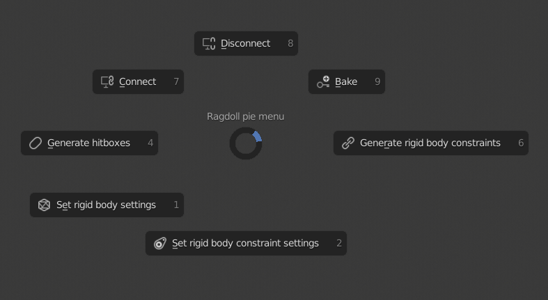
It can be found in the search popup

To make a ragdoll you need two things:
1.Generate hitboxes
2.Connect them with rigid body constraints
Hitboxes¶
To make hitboxes from mesh you need to select mesh object ,armature and run Make hitboxes operator from pie menu. Here’s how hitboxes look like with different operator settings.
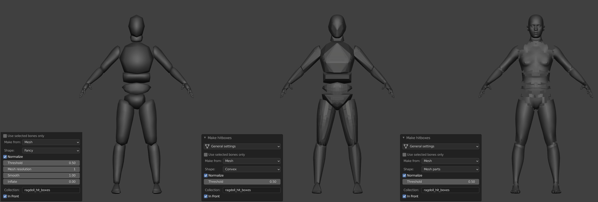
Hitbox shape depends on vertex groups.
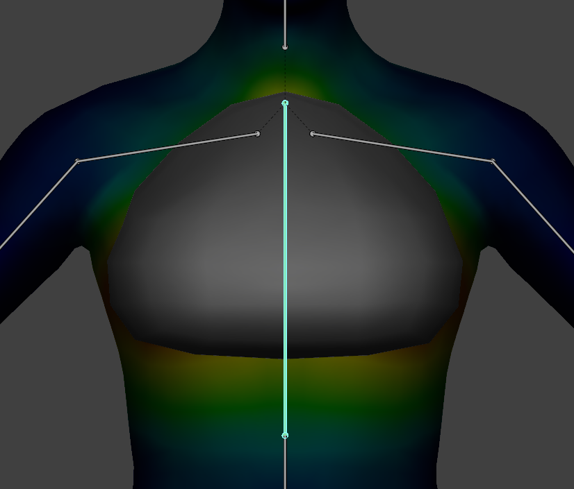
If some bones don’t have vertex groups,try to create them automatically using Make vertex groups operator.
Also,you can generate hitboxes from bones.
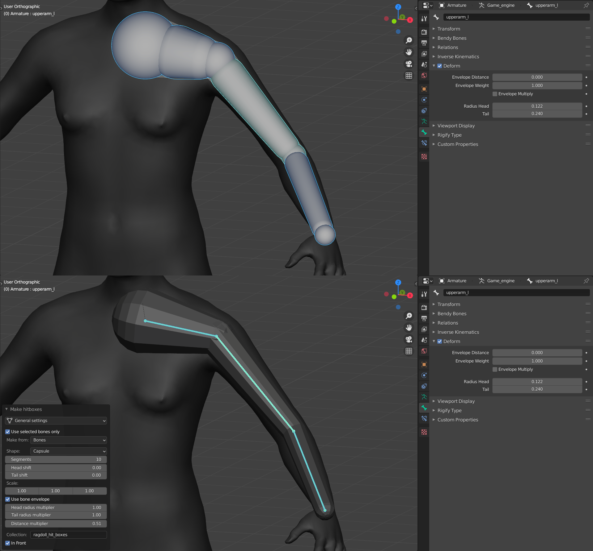
Or just take any objects and connect them to the bones using Connect operator. Each object will be connected to the nearest bone.
Constraints¶
Select hitboxes and run Make constraints operator
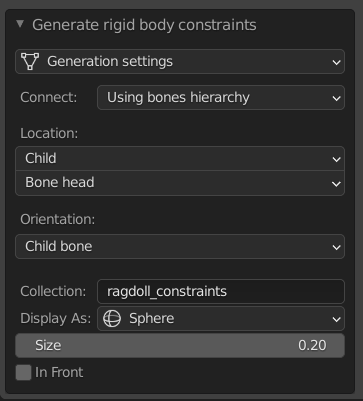
Tip
Since hitboxes are connected to the bones it doesn’t matter whether you select hitboxes or their bones in pose mode,operator will work. Same is true for other operators from ragdoll pie menu.
By default, constraints are generated according to the bones hierarchy. If bones are not parented to each other ,use different mode. Selected to active ,for example
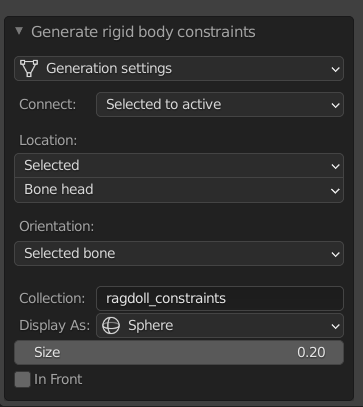
To set up constraint limits run Set limits operator and move hitboxes.
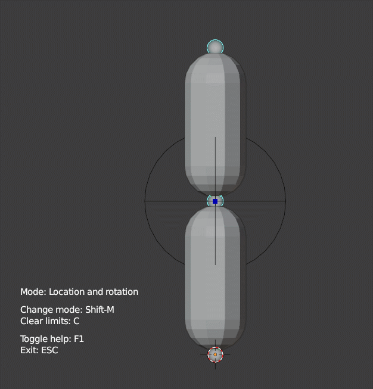
When you are done,press Esc
Also you can copy rigid body constraint settings from active to selected using corresponding operator. Adjust copied properties in operator settings,if needed.
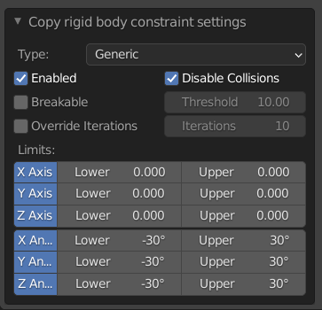
Animation¶
Suppose,you have a model with animation and you want to enable ragdoll at some frame.
At first,you need to copy animation from bones to hitboxes.
To do that,make hitboxes follow bones and make them animated.
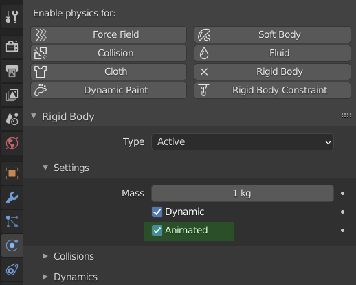
Tip
Hold Alt when you are changing this property , to change it on all selected objects at once.
Use this addon to animate it on selected objects.
Also,you can manipulate this property from pie menu
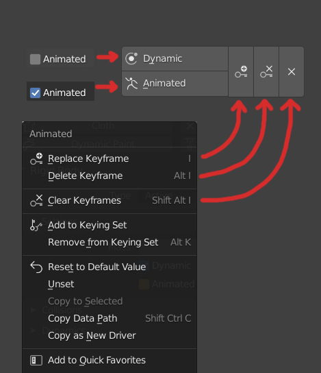
Bake hitboxes animation using Bake operator from pie menu and make bones follow them again.
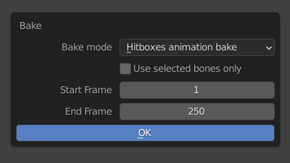
Snap constraints at the first frame of simulation.
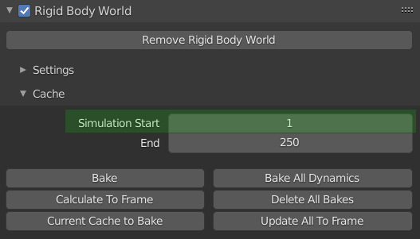
Tip
If you snapped constraint or change other physical property and this didn’t affect simulation as expected,try to run Clear cache operator
Disable Animated property at some frame

Important
Make sure that animation doesn’t violate constraint limits at this frame.
Bake physics.
Bake bones animation.
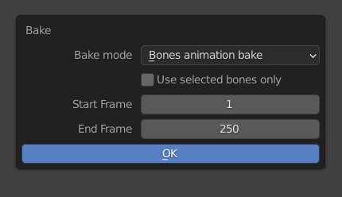
Important
Avoid hitbox intersections,if they are not connected with constraint. If they are,you can disable collisions in constraint properties 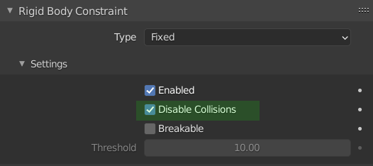